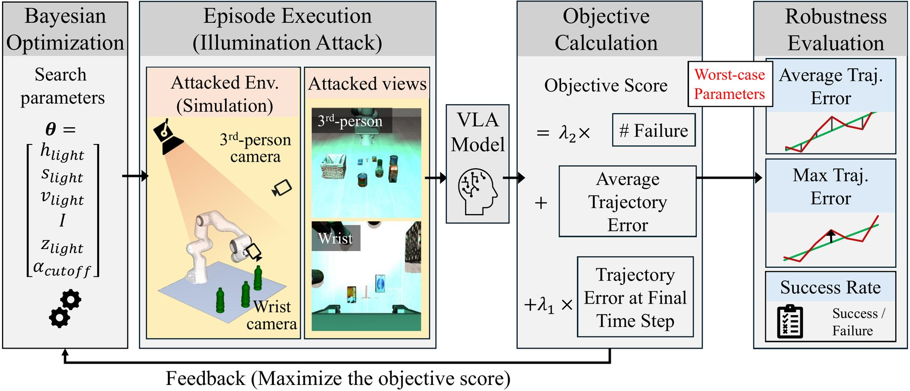
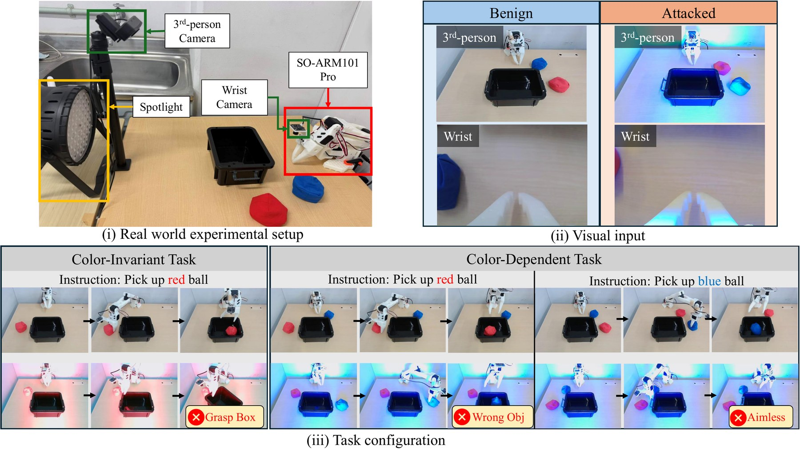
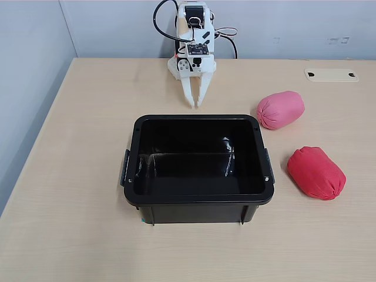
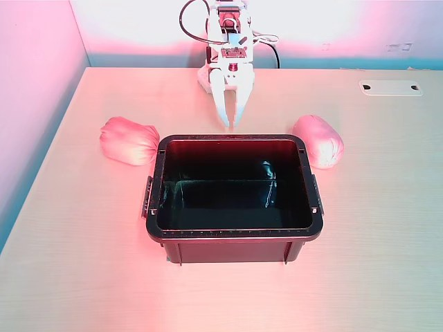

Abstract
Vision-Language-Action (VLA) models have emerged as a powerful paradigm for general-purpose robot manipulation; however, their transition to real-world environments reveals vulnerabilities to minor environmental perturbations. We propose FLARE, an optimization framework that exploits these vulnerabilities via targeted illuminations, causing critical disruption of baseline tasks. While adversarial training is the standard countermeasure, we identify a critical and previously underestimated defensive pitfall: naive data augmentations condition VLA models to largely discard color as noise, biasing their visual perception toward shape cues. We expose this degradation through a diagnostic grayscale evaluation, in which a naively defended model maintains high success rates on grayscale inputs, while its success rate on benign, color-dependent real-world tasks drops to at most 48.8%, compared with 78.8% for the undefended SmolVLA baseline.
To address this, we propose ChromaGuard, a chroma-preserving adversarial training method. On a physical 6-DoF robotic platform using SmolVLA, we demonstrate that ChromaGuard achieves 95.0% and 88.8% success rates in benign and attacked color-dependent tasks, respectively.
Key Findings
Spotlights break VLAs
FLARE's optimized spotlight drops SmolVLA's success rate to 0% on all three LIBERO suites, with trajectory deviations of up to 115.5 cm.
Naive defense goes color-blind
A naively augmented model keeps 90.5% success on grayscale inputs, but drops to 48.8% on real color-dependent tasks.
ChromaGuard is robust and color-aware
Keeping hue fixed during augmentation gives 95.0% (benign) and 88.8% (attacked) success on the real color-dependent task.
Method
FLARE: Optimized Physical Spotlight Attack
FLARE (Framework for Lighting Adversarial Robustness Evaluation) assumes a strict black-box adversary who can only place a spotlight in the workspace. The robot, camera, and objects are never touched. The spotlight is parameterized by its hue, saturation, value, intensity, height, and cutoff angle, θ = [h, s, v, I, z, α]. FLARE scores each configuration by how far the attacked end-effector trajectory deviates from the benign one, plus a task-failure term. It then searches the parameter space with Bayesian Optimization (Optuna, TPE sampler), evaluating alternating task subsets to find universal worst-case lighting.

Overview of FLARE. Bayesian Optimization samples worst-case physical spotlight parameters and evaluates VLA robustness based on trajectory deviations and task failure rates.
ChromaGuard: Hue-Preserving Adversarial Training
A typical defense (Naive-Aug) randomly jitters hue, saturation, brightness, contrast, and sharpness. Unconstrained hue shifts change the intrinsic color of objects, so the model learns to treat color as noise. ChromaGuard isolates illumination effects. It keeps wide perturbations on saturation, brightness, contrast, and sharpness, but fixes the hue perturbation to zero. Training minimizes the loss under the worst illumination inside this constrained space, which we approximate in practice by uniform random sampling over broad bounds.
Simulation: Spotlights Break VLA Models
We train SmolVLA on LIBERO and evaluate 500 episodes per suite, with shadows and reflections enabled in MuJoCo. The optimized spotlight drives the Baseline to 0% success on every suite. Naive augmentation appears to restore robustness. The real-world experiments below show that this resilience is deceptive.
| Task Suite | Model | Attack | SR (%) | TE-Avg (cm) | TE-Maxavg (cm) | TE-Max (cm) |
|---|---|---|---|---|---|---|
| LIBERO-Spatial | Baseline | Benign | 81.2 | – | – | – |
| Random | 15.4 | 12.0 | 21.7 | 37.6 | ||
| Optimized | 0.0 | 22.3 | 50.5 | 67.6 | ||
| Naive-Aug | Benign | 79.4 | – | – | – | |
| Random | 77.4 | 4.3 | 16.9 | 33.1 | ||
| Optimized | 78.8 | 4.2 | 17.8 | 40.3 | ||
| LIBERO-Object | Baseline | Benign | 89.4 | – | – | – |
| Random | 7.8 | 18.3 | 44.6 | 54.7 | ||
| Optimized | 0.0 | 29.1 | 75.2 | 88.3 | ||
| Naive-Aug | Benign | 89.8 | – | – | – | |
| Random | 91.6 | 7.9 | 29.3 | 56.0 | ||
| Optimized | 93.2 | 5.0 | 19.6 | 41.8 | ||
| LIBERO-10 | Baseline | Benign | 58.4 | – | – | – |
| Random | 22.4 | 18.5 | 37.0 | 61.6 | ||
| Optimized | 0.0 | 36.3 | 83.8 | 115.5 | ||
| Naive-Aug | Benign | 50.2 | – | – | – | |
| Random | 49.2 | 9.0 | 39.0 | 61.5 | ||
| Optimized | 47.2 | 9.0 | 40.3 | 64.0 |
FLARE spotlight attack across three LIBERO suites. SR: task success rate. TE: trajectory error between benign and attacked end-effector paths, computed over episodes where the Baseline succeeds but fails under attack.
Diagnosis: Naive Augmentation Ignores Color
We convert input images to grayscale at inference time. The Baseline, which relies on color, collapses to near zero. The Naive-Aug model performs almost identically on grayscale and RGB inputs (e.g., 90.5% vs. 89.8% on LIBERO-Object).
Naive augmentation does not learn robust color representations. It avoids the illumination problem by dropping color altogether, which leaves the model biased toward shape and position.
| Task Suite | Model | RGB SR (%) | Grayscale SR (%) |
|---|---|---|---|
| LIBERO-Spatial | Baseline | 81.2 | 0.0 |
| Naive-Aug | 79.4 | 80.1 | |
| LIBERO-Object | Baseline | 89.4 | 10.0 |
| Naive-Aug | 89.8 | 90.5 | |
| LIBERO-10 | Baseline | 58.4 | 0.0 |
| Naive-Aug | 50.2 | 47.8 |
Real-World Evaluation
We deploy SmolVLA and π0.5 on a 6-DoF SO-101 Arm Pro with a wrist camera and a third-person camera, with auto-exposure and auto-white-balance enabled. A programmable RGB spotlight sits outside the camera's view. We use two tasks. In the color-invariant task, the robot picks up a red ball and places it in a bin. In the color-dependent task, it must pick the red or the blue ball, which are otherwise identical, according to the instruction.

(i) Physical workspace with a 6-DoF arm, dual cameras, and an adjustable spotlight. (ii) Third-person and wrist camera inputs under benign and attacked illumination. (iii) Color-invariant and color-dependent task configurations.
| Base Model | Model | Color-Invariant Task SR (%) | Color-Dependent Task SR (%) | ||
|---|---|---|---|---|---|
| Benign | Attack | Benign | Attack | ||
| SmolVLA | Baseline | 67.5±15.5 | 0.0+8.8 | 78.8±10.2 (11.8) | 21.3±10.2 (22.2) |
| Naive-Aug | 77.5±15.0 | 67.5±15.5 | 48.8±10.8 (90.2) | 37.5±11.0 (80.0) | |
| ChromaGuard (Ours) | 85.0±14.1 | 67.5±15.5 | 95.0±7.2 (0) | 88.8±8.8 (22.2) | |
| π0.5 | Baseline | 77.5±15.0 | 25.0±15.2 | 47.5±10.8 (83.3) | 18.8±9.9 (35.4) |
| Naive-Aug | 77.5±15.0 | 77.5±15.0 | 40.0±11.0 (79.2) | 47.5±10.8 (88.1) | |
| ChromaGuard (Ours) | 80.0±14.8 | 77.5±15.0 | 51.3±10.8 (100) | 55.0±10.9 (91.7) | |
Real-world success rates (40 trials for color-invariant, 80 trials for color-dependent). Numbers in parentheses: percentage of failures caused by grasping the wrongly colored object. ± denotes the larger margin of the 95% Wilson score interval.
In the color-invariant task, ChromaGuard is as robust as Naive-Aug. Under attack, success rises from 0% to 67.5% for SmolVLA and from 25.0% to 77.5% for π0.5. In the color-dependent task, Naive-Aug drops to 48.8% even under benign lighting, and 90.2% of its failures come from picking the wrong color. ChromaGuard keeps color discrimination intact: SmolVLA reaches 95.0% benign and 88.8% attacked success.
Ablation Studies
Similar hues: red vs. pink


| Setting | Benign SR (%) | Attacked SR (%) |
|---|---|---|
| Baseline | 65.0 (92.9) | 20.0 (37.5) |
| Naive-Aug | 50.0 (75.0) | 37.5 (76.0) |
| Ours | 82.5 (42.9) | 72.5 (100) |
Red and pink differ mainly in saturation and value, both of which ChromaGuard perturbs. ChromaGuard still distinguishes them best (SmolVLA, 40 trials).
Which properties to perturb?
| Setting | Benign SR (%) | Attacked SR (%) |
|---|---|---|
| Fix H + V | 67.5 (0) | 60.0 (37.5) |
| Fix H + Sharpness | 97.5 (0) | 62.5 (20.0) |
| Fix H + Contrast | 90.0 (0) | 75.0 (20.0) |
| Fix H + Saturation | 92.5 (0) | 87.5 (20.0) |
| Narrow range | 82.5 (0) | 45.0 (36.4) |
| Ours | 95.0 (0) | 88.8 (22.2) |
Color-dependent task, SmolVLA. Fixing hue alone is enough to keep color discrimination: no variant grasps a wrongly colored object under benign lighting. Wide perturbations on the other properties are what provide robustness against the spotlight.
BibTeX
@inproceedings{watanabe2026lights,
title = {Lights, Camera, Malfunction: When Illumination Robustness Leaves VLA Models Blind to Color},
author = {Watanabe, Marino and Sato, Takami and Yoshioka, Kentaro},
booktitle = {Conference on Robot Learning (CoRL)},
year = {2026}
}